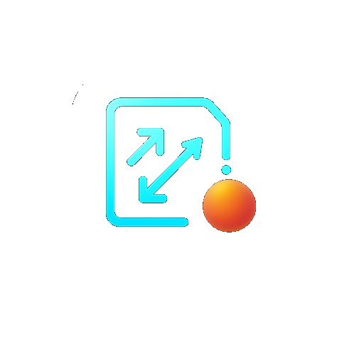
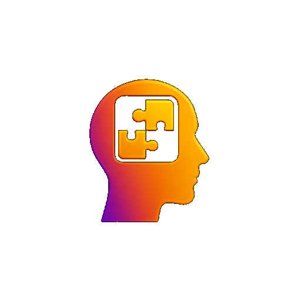
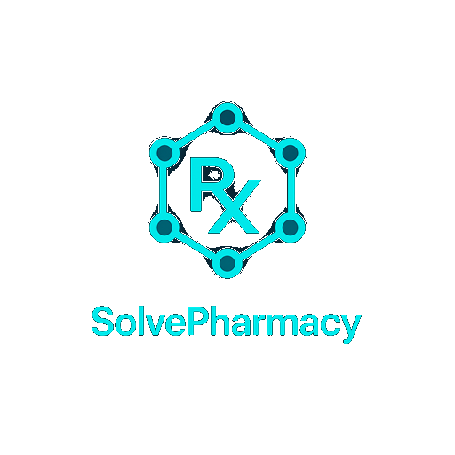
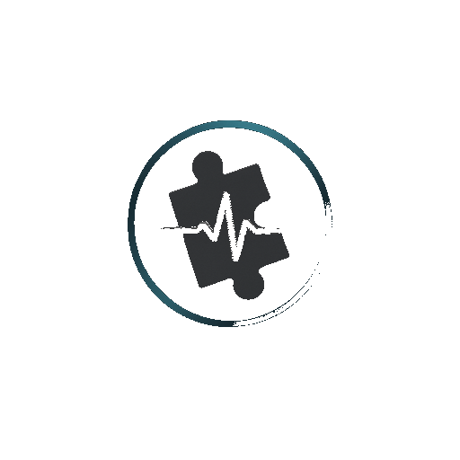

Current alignment
Review how this page connects to the active Core 12.0 roadmap, website governance, and production readiness checkpoints.
Staging Preview
Ecosystem intelligence dashboard for monitoring SolveMotion Labs apps, Core 12 status, release readiness, testing/bug intelligence, marketing, cost/licensing, and web portal visibility.
SolveMotion Labs applications are aligned around Core 12.0, DomainSignal input, CoreIntelligenceOrchestrator reasoning, immutable DTO output, and render-only application surfaces. Each product has its own domain identity while sharing one deterministic operational intelligence infrastructure model.
The 6.0 suite is structured so applications do not duplicate intelligence logic. Each app collects domain context, emits structured DomainSignal input, and renders Core 12.0 DTO output for readiness, risk, confidence, recommendations, reports, and guided decisions.
Four completed Core-connected web apps are live from the website. SolveOura remains in progress until its upgrade is complete.

Live Web AppMovement quality, readiness, risk, environment context, training adaptation, recommendations, and professional reports.
Connected to SolveMotion Labs Core 12.0

Live Web AppCognitive readiness, structured reflection, confidence, guided review, recommendations, and report surfaces.
Connected to SolveMotion Labs Core 12.0
Case reasoning, evidence interpretation, scene context, confidence, risk, recommendations, and professional reporting.
Connected to SolveMotion Labs Core 12.0

Live Web AppMedication knowledge, pharmacology learning, confidence, risk, governed recommendations, and professional education support.
Connected to SolveMotion Labs Core 12.0

In ProgressRecovery readiness, trend interpretation, risk awareness, recommendations, adaptive guidance, and report output.
Core 12.0 alignment planned after upgrade completion
Every product can display Core-owned intelligence outputs without recreating scoring logic in the app layer. This creates consistent decision support across movement, cognition, investigation, pharmacology, recovery, and education workflows.
Core 12.0 provides readiness and risk context so each application can display actionable interpretation without local scoring.
DTO outputs can include confidence, missing evidence, and guardrail context for safer decision support.
Recommendations are generated from Core-owned reasoning and rendered by the application as guided next steps.
Professional report narratives can be surfaced from DTO output for export-ready review and institutional communication.
The application suite supports the broader commercialization roadmap. Core 12.0 can be positioned for enterprise deployment, licensing, white-label product models, SaaS direction, SDK/API integration, investor review, and acquisition-ready platform expansion.
Core 12.0 can support reusable deterministic operational intelligence infrastructure for partner and enterprise models.
Commercial licensing and white-label deployment paths can preserve Core governance while allowing controlled product expansion.
Future SDK/API contracts can expose DomainSignal input and DTO output without exposing internal reasoning logic.
SolveMotion Labs is designed as one applied intelligence infrastructure platform, not a collection of disconnected apps. The structure keeps intelligence ownership centralized in Core 12.0, preserves render-only product surfaces, supports release gate validation, and allows the ecosystem to grow into commercial, enterprise, and institutional use cases.
WEBSITE PHASE 18C PAGE POLISH PANEL
This page is part of the governed SolveMotion Labs website structure and connects back to the active roadmap for platform status, release phases, and commercial readiness.
Review how this page connects to the active Core 12.0 roadmap, website governance, and production readiness checkpoints.